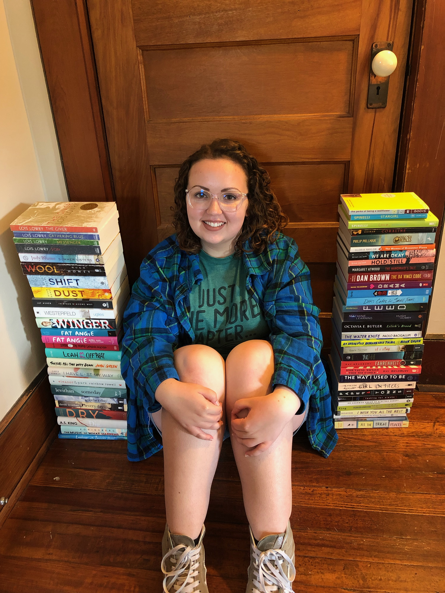
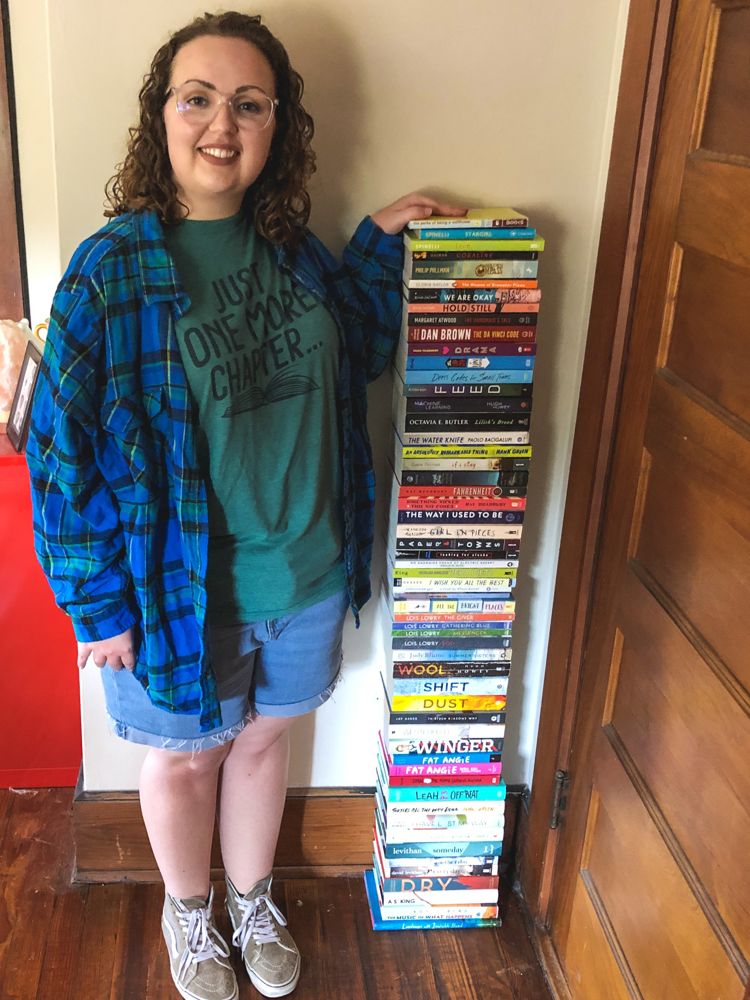

Cassie Reads


What am I currently reading?
History Is All You Left Me by Adam Silvera
About Me
My name is Catherine “Cassie” Zimmerman. I am a junior English major at Widener University. I am an avid reader and a freelance editor.